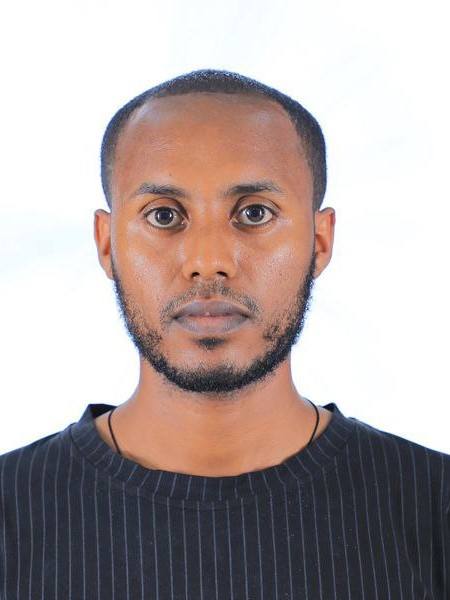

Explainable AI
Interpretable machine-learning methods that help engineers understand model predictions, influential variables, and nonlinear relationships.
I am a civil and structural engineer working at the intersection of structural engineering, machine learning, and explainable artificial intelligence. My research explores interpretable, data-driven methods for understanding structural behaviour and supporting safer, more resilient infrastructure.

I hold an M.Sc. in Structural Engineering from Bahir Dar University, Ethiopia. My academic and research work combines structural engineering principles with computational approaches to develop transparent and practically meaningful solutions to civil engineering problems.
My published research applies explainable machine learning to the prediction of shear strength in steel fiber-reinforced concrete (SFRC) beams without transverse reinforcement. I am interested in extending this work toward intelligent structural assessment, bridge engineering, and resilient infrastructure.
My work is focused on connecting data-driven methods with engineering knowledge, with an emphasis on interpretability and structural relevance.
Interpretable machine-learning methods that help engineers understand model predictions, influential variables, and nonlinear relationships.
Data-driven approaches for evaluating structural condition, identifying damage, and supporting infrastructure management.
Structural performance, assessment, resilience, and intelligent monitoring of existing bridges and infrastructure systems.
Integrating mechanics-based understanding and physical constraints into machine-learning models for engineering applications.
Computational approaches to improve the safety, reliability, and resilience of civil infrastructure under challenging conditions.
Intelligent digital representations for structural evaluation, performance prediction, and maintenance planning.
This research developed and evaluated machine-learning models to predict the shear capacity of SFRC beams without transverse reinforcement. The study combined predictive modelling with explainability techniques to examine the influence of key structural and material parameters and to interpret model behaviour in an engineering context.
More than 450 experimental SFRC beam records with eight structural and material input variables.
Linear Regression, SVM, Decision Tree, KNN, Random Forest, AdaBoost, Gradient Boosting, and XGBoost.
SHAP, LIME, partial dependence plots, and feature-importance analysis to interpret model behaviour.
Research in explainable machine learning, structural engineering, steel fiber-reinforced concrete, and AI-assisted infrastructure assessment.
Construction supervision, engineering measurements, drawings, quantity takeoff, BOQ preparation, payment documentation, and site coordination.
Practical experience in construction supervision, engineering drawings, measurements, and site activities.
Peer-reviewed research on explainable machine learning and the structural behaviour of steel fiber-reinforced concrete.
Next Materials (2026).
https://doi.org/10.1016/j.nxmate.2026.103993 ↗Discover Civil Engineering, Springer (2026).
https://doi.org/10.1007/s44290-026-00404-2 ↗Bahir Dar University / Bahir Dar Institute of Technology
CGPA: 3.84 / 4.00
Bahir Dar University / Bahir Dar Institute of Technology
CGPA: 3.64 / 4.00
Python, Pandas, NumPy, Scikit-learn, machine learning, explainable AI, SHAP, and LIME.
ETABS, SAP2000, SAFE, structural analysis, structural design, and finite element analysis.
AutoCAD, BOQ preparation, quantity takeoff, construction supervision, MS Project, and payment documentation.
Supplementary materials and resources associated with my research.
View research repository ↗Code repositories and computational projects.
Visit GitHub ↗Professional background, updates, and research connections.
Connect on LinkedIn ↗Explore my published research, citations, and academic profile.
View Google Scholar ↗I welcome academic collaboration and discussions related to structural engineering, explainable AI, machine learning, bridge engineering, and resilient infrastructure.